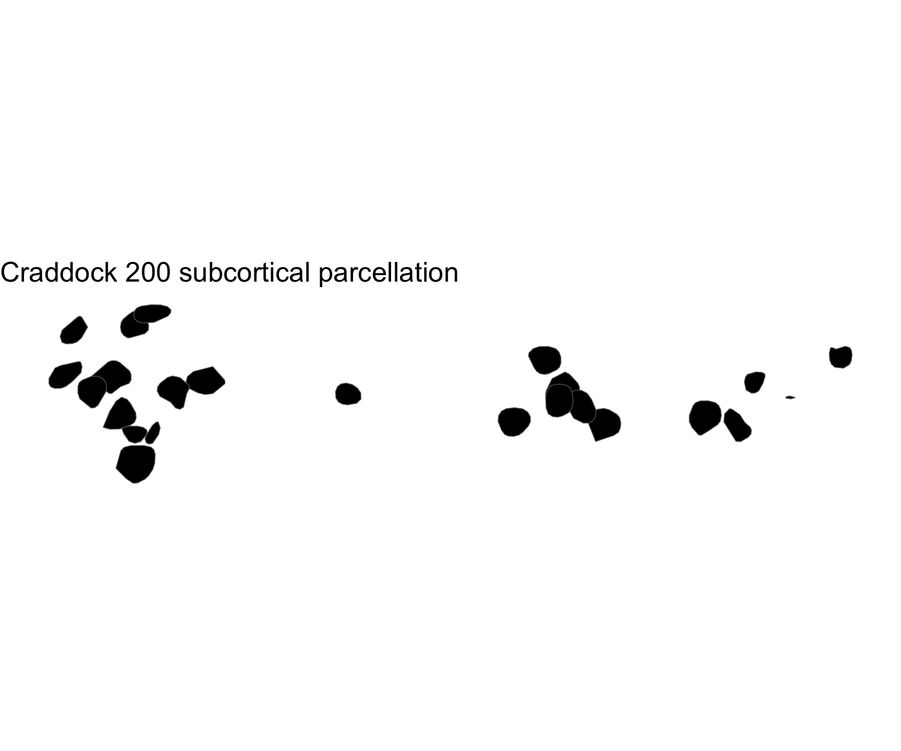

Work in Progress — This package is under active development and has not yet been officially released.
Craddock spatially constrained spectral clustering parcellation for the ggseg ecosystem.
Installation
You can install this package from GitHub with:
# install.packages("pak")
pak::pak("ggseg/ggsegCraddock")Cortical atlas
library(ggseg)
#> Loading required package: ggseg.formats
library(ggsegCraddock)
library(ggplot2)
ggplot() +
geom_brain(
atlas = craddock200_cortical,
mapping = aes(fill = label),
position = position_brain(hemi ~ view),
show.legend = FALSE
) +
scale_fill_manual(values = craddock200_cortical$palette, na.value = "grey") +
theme_void() +
ggtitle("Craddock 200 cortical parcellation")
Subcortical atlas
ggplot() +
geom_brain(
atlas = craddock200_subcortical,
mapping = aes(fill = label),
position = position_brain(. ~ view),
show.legend = FALSE
) +
scale_fill_manual(values = craddock200_subcortical$palette, na.value = "grey") +
theme_void() +
ggtitle("Craddock 200 subcortical parcellation")
Reference
Craddock RC et al. (2012). A whole brain fMRI atlas generated via spatially constrained spectral clustering. Human Brain Mapping, 33(8), 1914-1928.
Code of Conduct
Please note that the ggsegCraddock project is released with a Contributor Code of Conduct. By contributing to this project, you agree to abide by its terms.